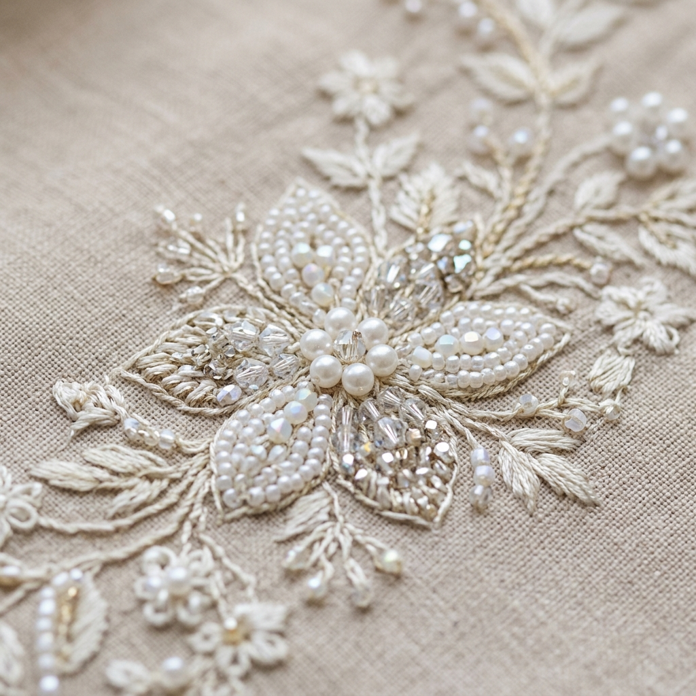
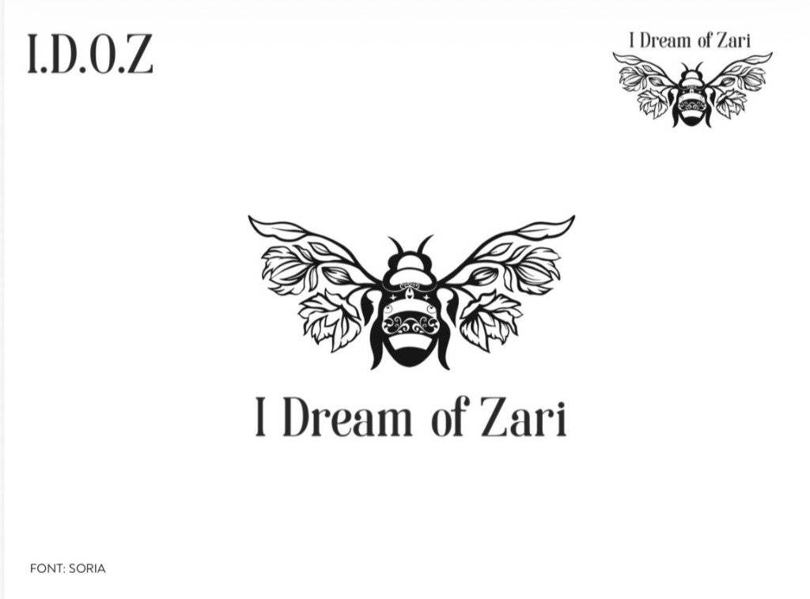
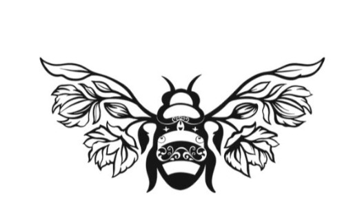
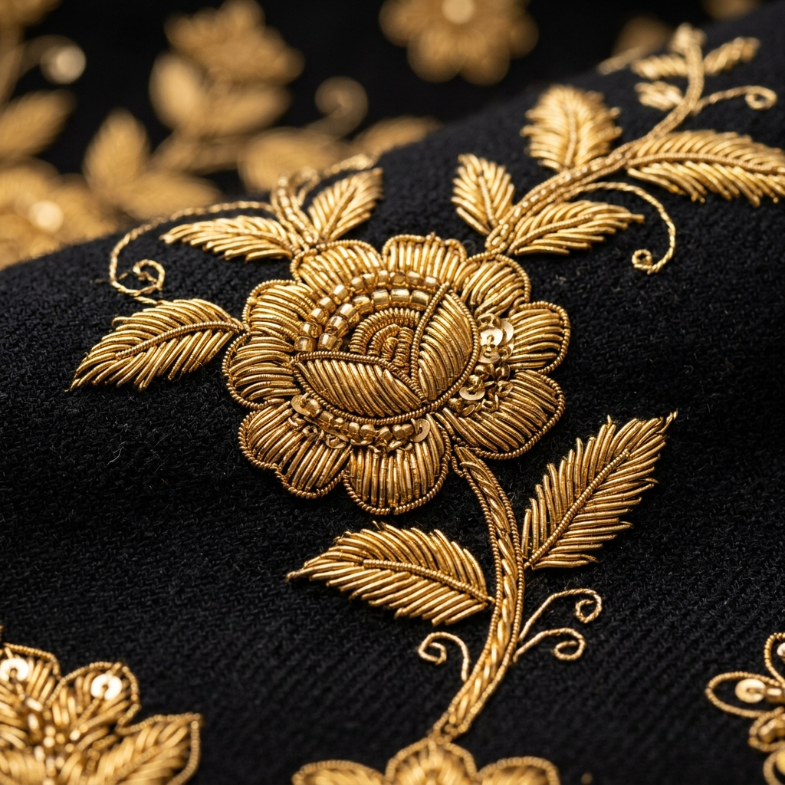
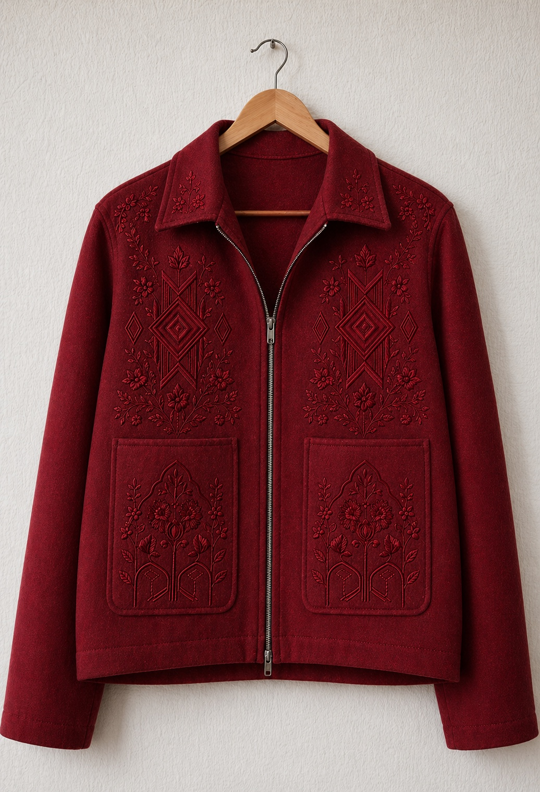
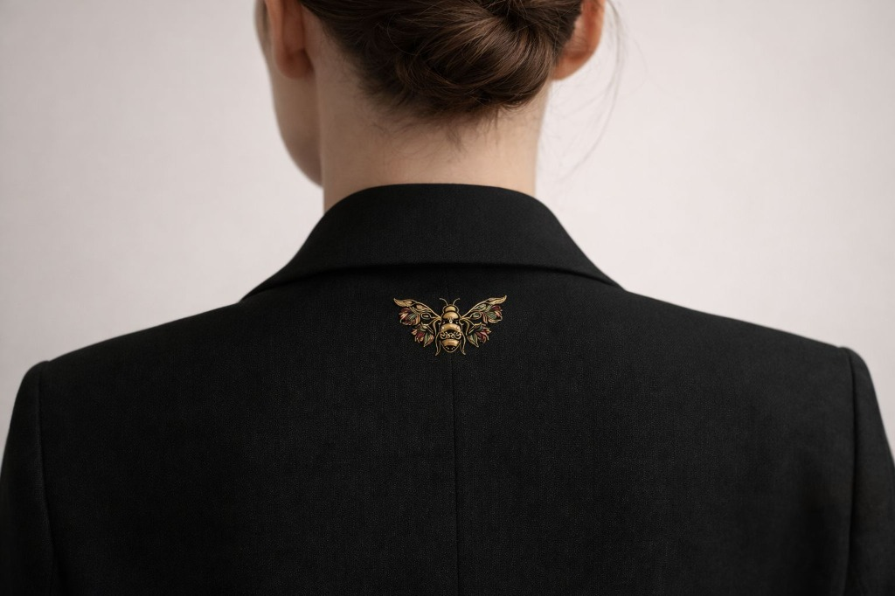

The Language of Craft
IDOZ—I Dream of Zari—was born from a singular obsession: to rescue the ancient art of Zardozi embroidery from the pages of history and drape it over the modern shoulder.
Originating in Persia and perfected across centuries in imperial courts, Zari is the language of goldwork. It is the practice of stitching gold-wrapped thread, metallic coils, and beads onto delicate silk. In a world of automated replication, we stand with the slow, deliberate, and meditative karigars whose fingers carry the memory of an empire.

Stages of Zari
The journey of a thread, from mind to mantle.
Khaka: The Sketch

Every Zari journey begins on transparent parchment. Every botanical crawl, every wing of our signature bee, and every geometric line is meticulously drafted by hand using ink. It is here that the math and poetry of the design are forged.
“The pencil drafts the boundaries where gold will live.”Chapaai: The Transfer

The tracing paper is pricked with thousands of tiny pinholes along the sketched lines. We lay it flat over raw, stretched silk and sweep a solution of white chalk-powder or liquid indigo across the parchment. The pigment seeps through the holes, creating a delicate, glowing outline of the pattern on the dark silk.
“We rub chalk onto silk to let the phantom outline guide the needle.”Adda: The Frame

The printed silk is mounted onto a large rectangular wooden frame known as the Adda. The artisans stretch the fabric extremely tight, securing it with cords. A drum-taut surface is essential—even a tiny wobble in fabric tension will cause the heavy metallic wires to warp the silk once sewn.
“Tension must be absolute. The frame holds the silk like the strings of a harp.”Zardozi: The Needlework

Using a specialized, hooked needle called the Aari, multiple karigars sit hunched over the Adda. Working in meditative unison, they sew precious metallic coils (Dabka), spiraled wires (Kora), and gold sequins. Every segment is measured, snipped, threaded, and locked onto the silk by hand, one stitch at a time.
“A quiet workshop, the scrape of metal on silk, and over a hundred hours of single-minded stitching.”Parcha: The Finish

After completion, the silk panels are carefully steamed, unmounted from the wooden frames, and cut into jacket pieces. Our bespoke tailors finish the garment, meticulously aligning the floral and geometric embroidery at every seam. The final product is a perfect synthesis of structured armor and delicate art.
“The embroidery panels are cut, steamed, and built into wearable history.”